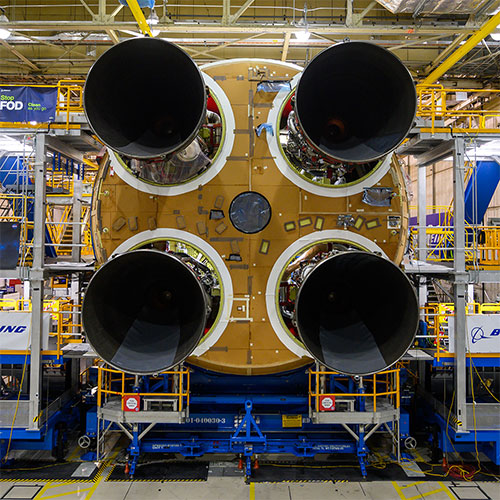
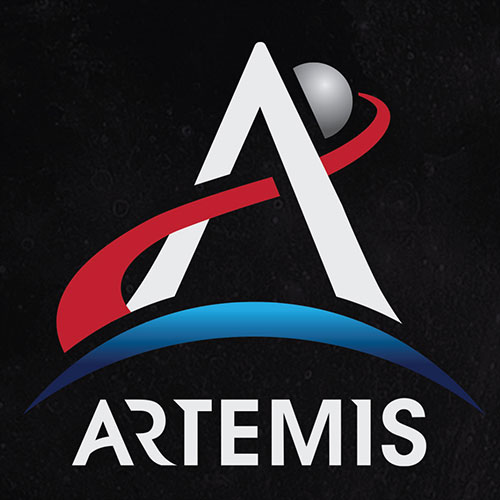

Four Engines
All four RS-25 engines were structurally mated to the core stage for NASA’s Space Launch System (SLS) rocket for Artemis I, the first mission of SLS and NASA’s Orion spacecraft.
Learn More

A New Identity
NASA is unveiling the new Artemis program identity, a bold look that embodies the determination of the men and women who will carry our missions forward. They will explore regions of the Moon never visited before, unlock mysteries of the Universe and test the technology that will extend the bounds of humanity farther into the Solar System..
Learn More.jpg)
New Companies
NASA has added five American companies to the pool of vendors that will be eligible to bid on proposals to provide deliveries to the surface of the Moon through the agency’s Commercial Lunar Payload Services (CLPS) initiative.
Learn More>